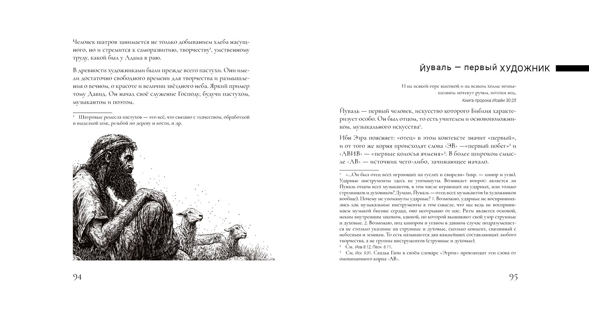
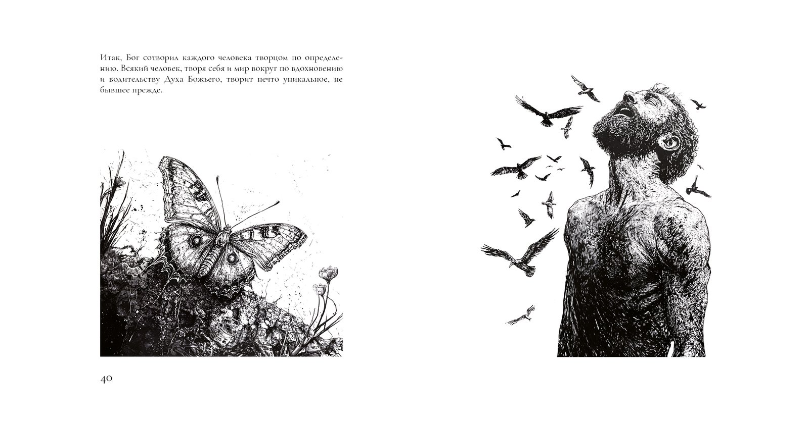
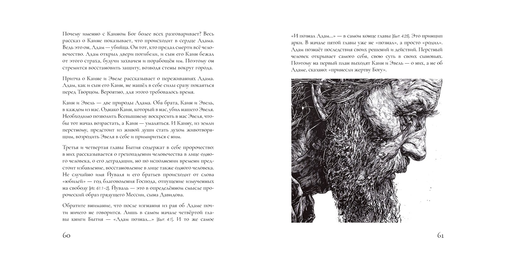
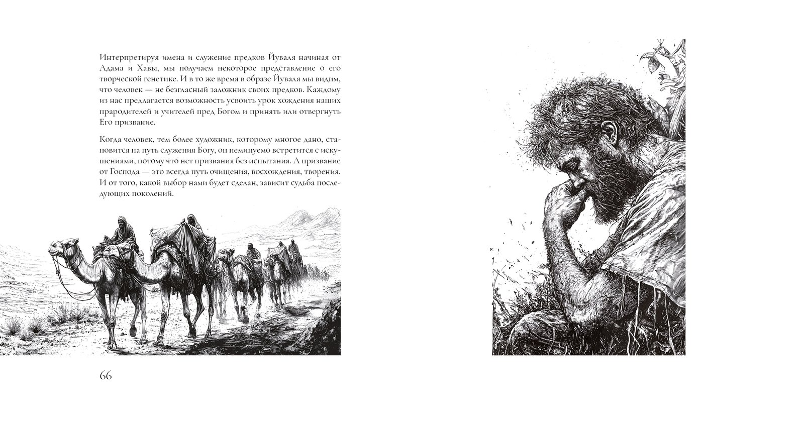

The Musician. Yuval, Son of Lemekh: the Book
THE MUSICIAN. Yuval, Son of Lemekh
Ephraim Kalish, Israel, 2024
Download the PDF of the book (in Russian)
Listen to the audio version (in Russian)
The book "The Musician. Yuval, Son of Lemekh" was published in Israel in 2024. 160 pages, 48 illustrations by the author. I deliberately left wide margins, as a frame, as a space for thought. Perhaps this reflects my habit of mounting pictures in a passe-partout. Or the influence of the wide open spaces where I was born.
I love audiobooks. But this book is not just a text. It was created as a whole work in which every image and every note work together. The audio version does not have this. So if you are here for the first time, begin with the PDF. See it with your eyes.
Some spreads from the book:





See also the description of the whole series: "Ephraim Kalish: Books on Creativity in the Bible".
 Bezalel – Son of Light. The Film
Bezalel – Son of Light. The Film